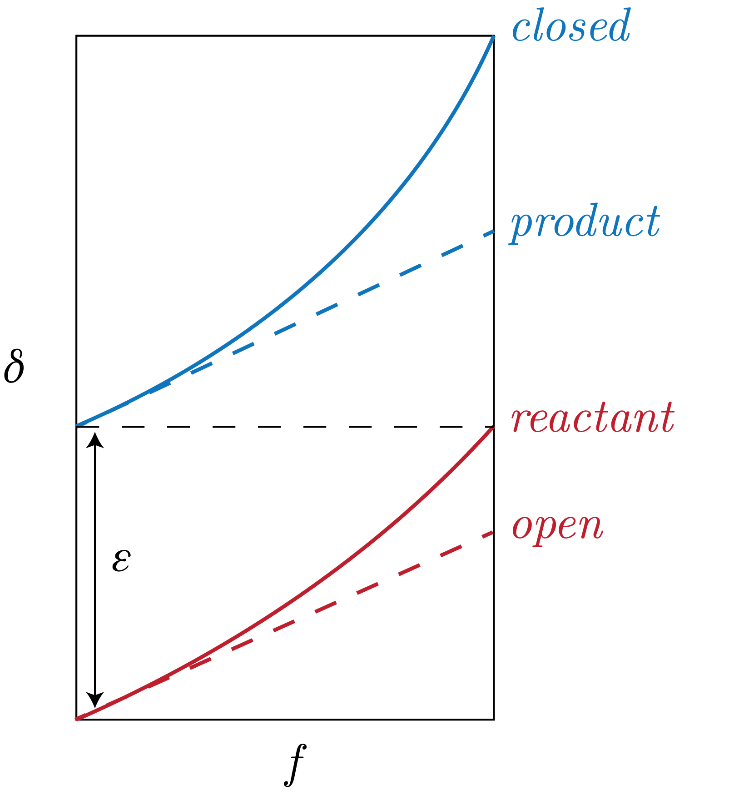

We will introduce four major types of models for differing systems, as follows:
Reversible, Closed System
In general, we have that "reversible" means equilibrium dynamics. This is to say that we have equations, for system $A$ and $B$, of the form:
\begin{equation}
A \rightleftharpoons B.
\end{equation}
Some examples of systems that obey this kind of dynamic are:
Water vapor: H$_2$O (O, H)
Carbonate system: CaCO$_3$, DIC (C, O)
Silicates: Si(OH)$_4$ (O)
Nitrite: NO$_2^- \: (aq)$ (O)
Sulfite: SO$_3^{2-} \: (aq)$ (O)
Carbon: CO$_2$, CH$_4$ (C)
We note here that some of these species can be at chemical equilibrium but not at isotopic equilibrium.
This is to say that there could be equilibrium amounts of each species present, but there is a gradient toward a more favorable isotopic composition of those species.
Some keep componets that lead to this distinction are time and temperature, which will change the reaction kinetics of our system.
First, we derive the measured isotope ratio of a phase $A$, $R_A$, for a given element $X$ with a reference phase $C$ from:
\begin{equation}
\delta_A = \left[\frac{R_A - R_{STD}}{R_{STD}}\right] \times 10^3 = \left[\frac{R_A}{R_{STD}} - 1\right] \times 10^3,
\end{equation}
where we have that, for concentration $\left[X\right]$:
\begin{equation}
R_A = \frac{\left[X_A\right]}{\left[X_C\right]}.
\end{equation}
Note that we are in per mille here and that the subscript $STD$ refers to a standard value.
Now, we can rearrange this equation for $R_A$ to get:
\begin{equation}
R_A = \left( \delta_A + 10^3 \right) \times R_{STD} / 10^{3}.
\end{equation}
To make this all concrete, we can think of a system such as: $X=$O, where $A = 18$, and $B=16$.
We then define an important factor in stable isotope geochemistry, which is the fractionation factor defined as follows:
\begin{equation}
\alpha_{A / B} = \frac{R_A}{R_B},
\end{equation}
which, from above, becomes:
\begin{equation}
\alpha_{A / B} = \frac{\delta_A + 10^3}{\delta_B + 10^3}.
\end{equation}
This then implies that:
\begin{equation}
\delta_A = \alpha_{A / B}\delta_B + (\alpha_{A / B} - 1) \times 10^3.
\end{equation}
We introduce the variable $\epsilon$:
\begin{equation}
\epsilon_{A / B} = \left( \alpha_{A / B} - 1 \right) \times 10^3,
\end{equation}
which in this lecture we use to define the Kinetic Isotope Effiect (KIE).
Therefore, we have that:
\begin{equation}
\delta_{A} = \alpha_{A / B}\delta_B + \epsilon_{A / B} \sim \delta_B + \epsilon_{A / B},
\end{equation}
where we have used that $\alpha_{A / B} \sim 1$.
Reversible, Open System
Again, we note that "reversible" implies that we are dealing with equilibrium dynamics.
As the system is "open", this means that we are seeing a loss products along the way, such as through distillation and rainout.
Oftentimes, we see this in the hydrological cycle or in hydrothermal vent systems.
Some explicit examples of this include:
Rainout during cloud transport, which leads to increasingly depleted vapor.
Weather patterns that follow temperature, altitude, latitude, and humidity (e.g., $\delta^{18}$O will go down as we get to the higher latitudes)
Irreversible, Closed System
We start by assuming some system of the form:
\begin{equation}
R_0 \to R + P,
\end{equation}
where we have $R_0$ is the initial concentration of the reactant, $R$ is the concentration of the reactant, and $P$ is the product of the reaction.
This is an irreversible system, so this is a one-way reaction, and it is a closed system, therefore there is not additional product or reactant to the system other than what is described by mass continuity in the equation above.
We next define:
\begin{equation}
\Delta_{A / B} = \delta_A - \delta_B.
\end{equation}
From our definition of $\alpha_{A/B}$, we can subtract $1 = (\delta_B + 10^3) / (\delta_B + 10^3)$ from both sides and note that $\delta \ll 10^3$, which gives:
\begin{equation}
\alpha_{A / B} - 1 = \frac{\delta_A - \delta_B}{10^3}.
\end{equation}
Then, we recall the Taylor expansion:
\begin{equation}
\log \left[x + 1\right] = x - \frac{x^2}{2} + \frac{x^2}{3} - \cdots, \quad \text{for } x \in (-1, 1].
\end{equation}
So, to zeroeth order, we have that, for $x = \alpha_{A / B} - 1$:
\begin{equation}
\Delta_{A / B} \sim (\alpha_{A / B} - 1) \times 10^3 \sim \log\left[\alpha_{A /B}\right] \times 10^3.
\end{equation}
Now, in this system we can derive:
\begin{equation}
\alpha_{P /R} = \frac{R_{P}}{R_R} \sim \epsilon_{P / R} \log\left[f \frac{1 + R_{R_0}}{1 + R_R}\right] = \log\left[\frac{R_R}{R_{R_0}}\right],
\end{equation}
where we define:
\begin{equation}
f = \frac{R}{R_0}.
\end{equation}
Given that $R_R, R_{R_0} \ll 1$, we can approximate this as:
\begin{equation}
\epsilon_{P / R} \log \left[f\right] = \log\left[\frac{R_R}{R_{R_0}}\right].
\end{equation}
We can rearrange this to get:
\begin{equation}
f^{\epsilon_{P / R}} = \frac{R_R}{R_{R_0}} = f^{\alpha_{P / R} - 1},
\end{equation}
dropping the per mille notation in the exponent of the third equation.
We now make the Mariotti Approximation, one of many we can do:
\begin{equation}
\log\left[\delta_R + 1\right] \sim \log\left[R_{R_0} + 1\right] + \epsilon_{P / R}\log\left[f\right].
\end{equation}
We note that this is essentially a line of the form: $y \sim mx +b$ in $\log$ space.
Therefore,we can get the slope of this line, if we have data, say, to get $\epsilon_{P / R}$ of the reaction described above.
From the equation above, we can also get:
\begin{align}
\delta_R &= \delta_{R_0} + \epsilon_{P / R}\log\left[f\right], \\
\delta_{P} &= \delta_{R_0} - \epsilon_{P / R}\left( \frac{f}{1 - f} \right) \log\left[f\right].
\end{align}
We note that these are approximations and have errors that scale with $f$ and $\epsilon$.
Irreversible, Open System
We start deriving the equations of this model system by assuming a steady state, this is to say that the fluxes in are equal to the fluxes out:
\begin{equation}
F_{in} = F_{out}.
\end{equation}
Now, for an irreversible reaction of the form:
\begin{equation}
A_0 \to A + B,
\end{equation}
we have:
\begin{equation}
F_{A_0}\delta_{A_0} = F_A\delta_A + F_B\delta_B.
\end{equation}
We can rearrange this to get:
\begin{equation}
\delta_A = \delta_{A_0} + \frac{F_B}{F_A + F_B}\epsilon_{A / B}.
\end{equation}
Noting that:
\begin{equation}
F_A + F_B = 1 - f,
\end{equation}
we get finally that:
\begin{equation}
\delta_A = \delta_{A_0} + (1-f)\epsilon_{A /B}.
\end{equation}
We can look at diagram of these two models of an irreversible system in Fig. 1.

Fig. 1: Two varying models of irreversible systems for fractionation, with specific interest in the fractionation factor $\epsilon_{P / R}$.
Introduction to the Nitrogen Cycle
We will use the N cycle to understand a few of these concepts, as there is a lot of N in on the Earth, like $205-330 \: 10^{18}$ [kg N]. Wow.
There are a few important parts of the N cycle that we will consider.
The first is denitrification, or NO$_2^-\to$ NO $\to$ N$_2$O $\to$ N$_2$, which contribues about 250 [Tg N y$^{-1}$] to the atmosphere.
This has an isotope fractionation of $\epsilon \sim 25 \: \left[‰\right]$.
Two important values to remember are that mean and deep ocean nitrate NO$_3^-$ has $\delta^{15}$N of 5 [‰] while atmospheric N$_2$ has $\delta^{15}$N of 0 [‰], as does the sedimentary NO$_3^-$.